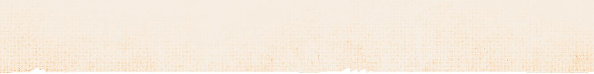

Embarque autorizado! Passageiros, tomem seus assentos, porque o nosso trem com destino ao passado já vai partir.
Se você sempre teve o sonho de viajar no tempo, então você está no lugar certo.
Com o ambiente adequado, um figurino sofisticado à moda antiga e uma boa trilha sonora de fundo, entraremos juntos em um túnel do tempo capaz de tornar realidade a experiência de se viver em uma outra época.
Em nosso ensaio, todo detalhe é pensado com muito carinho, a fim de proporcionar uma verdadeira experiência imersiva de outro século.
A temática vintage combinada com um cenário digno de cinema certamente serão capazes de criar memórias surpreendentes.
Amor...
… aos detalhes faz da experiência e minhas fotos especiais.
Cuidado...
… com a preparação do momento para tornar a nossa sessão inesquecível.
Técnica...
… em cada click para valorizar o seu melhor.
Locações
Toda nossa sessão é pensada com muito cuidado e apreço, de acordo com as preferências de cada cliente.
Por isso, valorizo a liberdade do nosso viajante em escolher o local onde toda a mágica irá acontecer. Aqui, você é quem escolhe, e eu te acompanho nessa jornada!
Locações
Toda nossa sessão é pensada com muito cuidado e apreço, de acordo com as preferências de cada cliente.
Por isso, valorizo a liberdade do nosso viajante em escolher o local onde toda a mágica irá acontecer. Aqui, você é quem escolhe, e eu te acompanho nessa jornada!
Dúvidas Frequentes
1 - Como são os ensaios comigo?
Os nossos ensaios são pensados cuidadosamente e com muito respeito de modo a alinhar as expectativas dos clientes com os serviços que eu ofereço.
Por isso, um bom planejamento feito a partir de um diálogo transparente e inspirador vai gerar um resultado único e satisfatório para ambas as partes.
O meu papel aqui é entender através da nossa conversa os seus sonhos e objetivos com a nossa sessão!
Nós vamos conversar sobre sua personalidade, sobre o uso das fotografias, vamos trocar referências e definir todos os detalhes do ensaio, como data, figurinos, locação e entrega das fotos. Para isso, podemos fazer uma videochamada ou uma reunião presencial.
2 - O figurino eu que escolho?
Os nossos ensaios são pensados cuidadosamente e com muito respeito de modo a alinhar as expectativas dos clientes com os serviços que eu ofereço.
Por isso, um bom planejamento feito a partir de um diálogo transparente e inspirador vai gerar um resultado único e satisfatório para ambas as partes.
O meu papel aqui é entender através da nossa conversa os seus sonhos e objetivos com a nossa sessão!
Nós vamos conversar sobre sua personalidade, sobre o uso das fotografias, vamos trocar referências e definir todos os detalhes do ensaio, como data, figurinos, locação e entrega das fotos. Para isso, podemos fazer uma videochamada ou uma reunião presencial.
3 - Como é a maquiagem do ensaio?
Os nossos ensaios são pensados cuidadosamente e com muito respeito de modo a alinhar as expectativas dos clientes com os serviços que eu ofereço.
Por isso, um bom planejamento feito a partir de um diálogo transparente e inspirador vai gerar um resultado único e satisfatório para ambas as partes.
O meu papel aqui é entender através da nossa conversa os seus sonhos e objetivos com a nossa sessão!
Nós vamos conversar sobre sua personalidade, sobre o uso das fotografias, vamos trocar referências e definir todos os detalhes do ensaio, como data, figurinos, locação e entrega das fotos. Para isso, podemos fazer uma videochamada ou uma reunião presencial.
4 - Posso parcelar o ensaio?
Os nossos ensaios são pensados cuidadosamente e com muito respeito de modo a alinhar as expectativas dos clientes com os serviços que eu ofereço.
Por isso, um bom planejamento feito a partir de um diálogo transparente e inspirador vai gerar um resultado único e satisfatório para ambas as partes.
O meu papel aqui é entender através da nossa conversa os seus sonhos e objetivos com a nossa sessão!
Nós vamos conversar sobre sua personalidade, sobre o uso das fotografias, vamos trocar referências e definir todos os detalhes do ensaio, como data, figurinos, locação e entrega das fotos. Para isso, podemos fazer uma videochamada ou uma reunião presencial.
